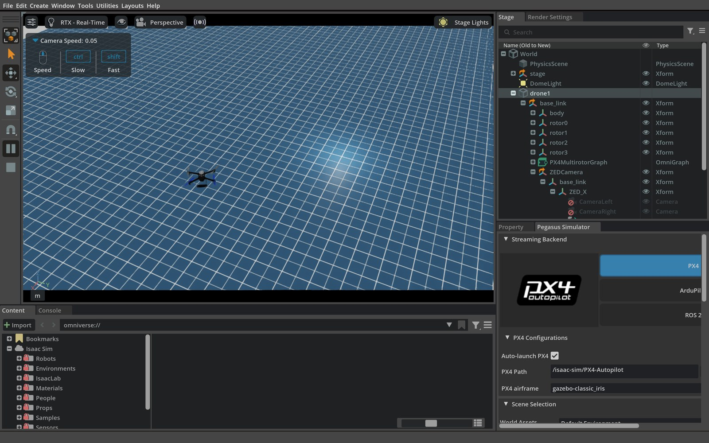
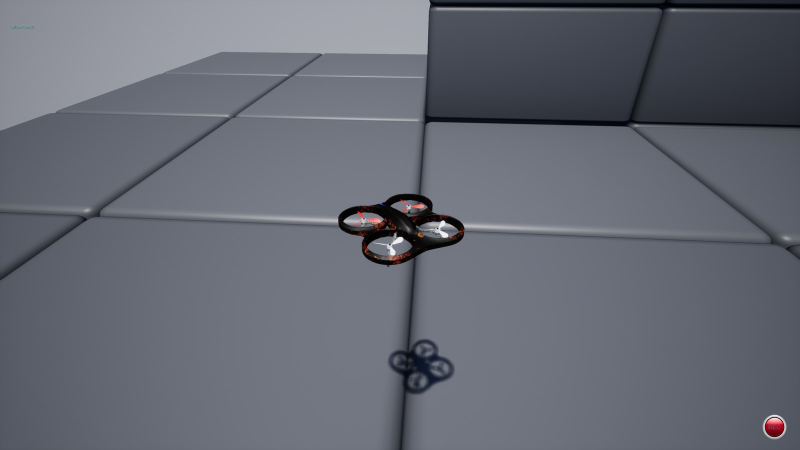
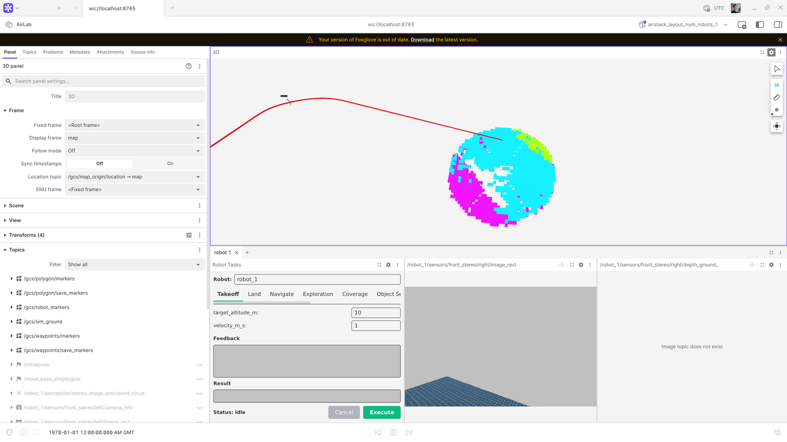

Testing (tests/)¶
AirStack's pytest tree under tests/ has these roles:
tests/system/— Docker stack tests (sim + robot + GCS): liveliness, sensor Hz, takeoff/hover/land, image/workspace builds.- Unit tests — Fast hermetic tests (
unitmark) whose source is co-located with each ROS 2 package at<package>/test/.colcon_unit_test_packages.yamllists which packages have unit tests, andpytest tests/collects them from there. tests/integration/— Cross-component tests (integrationmark) that wire the robot container to a host-side component, without a sim or GPU.tests/meta/— Contract tests (unitmark) that pin the modular-AirStack CLI/docs/stack contracts (seetests/meta/README.md).
Pytest hooks and the shared fixtures live in tests/conftest.py; reusable helpers are split by concern into the tests/harness/ package (re-exported through conftest). Use airstack test -m unit -v for hermetic tests only, or the marks below for the full stack.
Test Suite Structure¶
System tests (tests/system/)¶
| Module | Mark | What it tests | Hardware required |
|---|---|---|---|
system/test_build_docker.py |
build_docker |
Docker image builds (robot-desktop, gcs, isaac-sim, ms-airsim); records image sizes | Docker daemon |
system/test_build_packages.py |
build_packages |
colcon build inside each container (robot, GCS, ms-airsim ROS workspace) |
Docker daemon |
system/test_wiring_snapshot.py |
wiring |
Observed wiring snapshot of the running ROS graph (via wiring_snapshot.py), drift-checked against the stack's committed stacks/<name>/wiring.md; writes the observed snapshot to <run_dir>/wiring/ |
Docker daemon, GPU, sim license |
system/test_liveliness.py |
liveliness |
Stack bring-up: container Running state, /clock readiness, tmux panes, sentinel ROS 2 nodes, compute snapshot, infra-only test_stable (tmux + nodes + compute) |
Docker daemon, GPU, sim license |
system/test_sensors.py |
sensors |
After liveliness in collection order: sim + robot stereo/depth Hz (Isaac: batched ros2 topic hz to avoid bridge overload; ms-airsim: single batch), filtered LiDAR via echo --once + cloud sanity (isaacsim), sim RTF, test_sensor_streams_stable |
Docker daemon, GPU, sim license |
system/test_takeoff_hover_land.py |
takeoff_hover_land |
End-to-end flight: PX4 readiness gate, takeoff to 10 m, hover stability, land — one chain per (sim, num_robots, iteration, velocity) | Docker daemon, GPU, sim license |
system/test_fixed_trajectory.py |
autonomy |
Fixed-pattern trajectory evaluation: takeoff, execute a trajectory (Circle, Figure8, Racetrack, Line), record path deviation metrics, land — one chain per (sim, num_robots, iteration, trajectory_type) | Docker daemon, GPU, sim license |
system/test_waypoint_flight.py |
waypoint_flight |
Ordered-waypoint navigation: takeoff, send a waypoint route to NavigateTask, judge the odometry track with the standalone waypoint_checker.py, land — one chain per (sim, num_robots, iteration) |
Docker daemon, GPU, sim license |
Unit tests (co-located)¶
Hermetic tests use @pytest.mark.unit (see pytest.ini).
Test source lives alongside its ROS 2 package at
robot/ros_ws/src/<layer>/<package>/test/test_*.py (the ROS 2 / colcon convention).
colcon_unit_test_packages.yaml lists which packages
have unit tests; conftest.py resolves each to its test/ dir and collects the
non-linter test_*.py files under --import-mode=importlib, tagging each unit. To add
a package's unit tests, list it in that YAML. Both airstack test -m unit and
colcon test --packages-select <pkg> run the same source (colcon also runs the ament
linters + C++ gtests).
Example: robot/ros_ws/src/sensors/lidar_point_cloud_filter/test/test_validation_core.py
tests the numpy-only range validation rules in
robot/ros_ws/src/sensors/lidar_point_cloud_filter/lidar_point_cloud_filter/validation_core.py
(also used by scripts/validate_lidar_filter_clouds.py inside the robot container).
See Unit Testing Guide
and the add-unit-tests agent skill for full details.
Meta / contract tests (tests/meta/)¶
Fast contract tests (unit mark, no Docker) that pin the modular-AirStack CLI,
docs, and stack contracts so refactors cannot silently break them — see
tests/meta/README.md. One line each:
| File | Pins |
|---|---|
meta/test_bridge_contract.py |
Split-stack bridge.yaml → generated DDS-router config (tools/gen_dds_router.py), incl. the no-control-setpoint bridge hard gate |
meta/test_collection_contract.py |
Pytest collection rules: co-located unit-test injection, path narrowing, rejection of repo-root collection |
meta/test_docker_layer_plan_contract.py |
Module Docker layer composition plan (modules.lock → layered image build) |
meta/test_docs_catalog_contract.py |
Generated docs/modules/ catalog: determinism, drift --check, nav entries exist, deploy workflows fetch module docs |
meta/test_doctor_contract.py |
airstack doctor checks: observe-and-report semantics and the two hard gates |
meta/test_fleet_contract.py |
Fleet file schema/validation, per-robot compose generation, fleet resolver |
meta/test_launch_intent_contract.py |
airstack up intent flags → derived env-var sets (profiles, URDF, sim script) |
meta/test_launch_single_locus.py |
Repo-wide launch lint: wiring lives in exactly one locus (stack entry files), allowlist in meta/launch_lint_allowlist.txt |
meta/test_metrics_reporting_contract.py |
parse_metrics.py campaign comparability and regression semantics |
meta/test_module_manifest_contract.py |
module.yaml manifest schema + validator behavior |
meta/test_module_overlay_contract.py |
Module workspace overlay (sync/clone/overlay/remove artifacts) |
meta/test_stack_layout_contract.py |
Stack folder anatomy: entry launch files, modules.repos, no dispatcher inside entries |
meta/test_wiring_snapshot_contract.py |
The wiring-snapshot tool itself: snapshot format, normalization, drift detection |
Integration tests (tests/integration/)¶
Cross-component tests (integration mark) that wire a few real components together — the
robot autonomy container plus a host-side component — without a sim or GPU. The
shared robot_autonomy_stack fixture (in conftest.py) reuses a running robot-desktop
container or brings one up automatically (like build_packages), then tears it down.
Collection order runs integration after build_packages and before the sim tiers.
Marks can be combined with pytest logic:
-m unit, -m "build_docker or build_packages", -m integration, -m liveliness, -m sensors, -m takeoff_hover_land, -m autonomy, -m waypoint_flight, or e.g. -m "liveliness or sensors" (see Bring-up scope below).
Bring-up scope (airstack_env)¶
airstack_env is class-scoped and parametrized per (sim, num_robots, iteration). Each test class that uses it (TestLiveliness, TestSensors, TestTakeoffHoverLand, TestFixedTrajectory, …) performs its own airstack up / airstack down for that parametrization. Selecting both classes (for example, -m "liveliness or sensors") runs two full stack cycles per tuple (liveliness class, then sensors class). Collection order (see conftest.py) runs liveliness before sensors when both are selected. To save wall time, run -m liveliness or -m sensors alone when one suite is enough.
Test Infrastructure¶
conftest.py holds the pytest hooks and the airstack_env / robot_autonomy_stack fixtures. The reusable helpers are split by concern into the tests/harness/ package and re-exported through conftest, so from conftest import <name> (and from harness import <name>) both work:
| Module | Contents |
|---|---|
harness/session.py |
Session-scoped state (results dir, current item, last cmd output) + shared logger |
harness/discovery.py |
Unit-test discovery driven by colcon_unit_test_packages.yaml (AIRSTACK_ROOT, repo_path, unit_test_files, …) |
harness/commands.py |
Subprocess / docker exec / ros2 helpers with per-test output capture (airstack_cmd, docker_exec, ros2_exec, read_log_tail) |
harness/containers.py |
Container discovery, compute-usage sampling, image checks (find_container, wait_for_container, sample_compute_usage, missing_images) |
harness/metrics.py |
MetricsRecorder, get_metrics, current_test_id (writes metrics.json) |
harness/run_meta.py |
run_meta.json outcome metadata: pytest exit status, campaign fingerprint, completed-vs-infrastructure outcomes |
harness/test_ids.py |
Test-id parsing/formatting shared by metrics recording and reporting |
harness/sim.py |
SIM_CONFIG sim targets + ros2 topic sampling (sample_hz, parallel_sample_hz, wait_for_first_message) |
harness/collection.py |
Cross-module test ordering + parametrize-id rewrite (modify_items) |
airstack_env fixture¶
Parametrized over (sim, num_robots, iteration) tuples derived from CLI flags. For each combination it:
- Calls
airstack upwith the appropriateCOMPOSE_PROFILES,NUM_ROBOTS, and headless flags - Records
airstack_up_duration_stometrics.json - Yields an
envdict used by liveliness and sensor tests - Tears down with
airstack downand recordsairstack_down_duration_s
Isaac Sim and the sensors mark¶
LiDAR in pytest: conftest.py sets
ENABLE_LIDAR=true in SIM_CONFIG["isaacsim"]["extra_env"] so the multi-drone
Pegasus script (example_multi_px4_pegasus_launch_script.py) attaches RTX LiDAR
the same way the single-drone script always does. Without that flag the multi
script would not spawn LiDAR OmniGraphs.
Topic checks live in sensor_probes.py
and are driven by system/test_sensors.py:
| Path | What we measure | How |
|---|---|---|
Sim → /clock, stereo images, stereo depth |
Publish rate | ros2 topic hz on the sim container: /clock alone, then chunks of two image_rect topics, then chunks of two depth topics (ISAACSIM_HZ_CHUNK_SIZE in sensor_probes.py). |
| Robot → same topic names (bridge) | Publish rate | Same two-at-a-time chunking on the robot container for Isaac. ms-airsim: one batch of four topics. |
Robot → filtered .../ouster/point_cloud |
Stream alive | ros2 topic echo --once per robot (not Hz — large PointCloud2). |
| LiDAR geometry | Near-range vs near_range_m |
robot/ros_ws/src/sensors/lidar_point_cloud_filter/scripts/validate_lidar_filter_clouds.py (raw vs filtered). |
Sim RTF (real-time factor from /clock) is also in the sensors suite.
test_sensor_streams_stable repeats sim + robot stereo + LiDAR probes every
--stable-interval for --stable-duration and records time-series to
metrics.json (stereo/depth as *.hz_samples; LiDAR echo-once as *.received_samples).
MetricsRecorder¶
Writes custom metrics to tests/results/<timestamp>/metrics.json after each record() call. Keys follow the pattern test_node_id → metric_key → {value, unit, direction}. Time-series data (Hz samples, compute snapshots) are stored as {key}_samples lists and expanded into scalar aggregates (mean, min, max, start_mean, end_mean) by parse_metrics.py.
Output files¶
Every test run produces a timestamped directory containing summary.txt,
results.xml, run_meta.json, and metrics.json (plus a wiring/ subdirectory
when the wiring mark runs, and a bounded diagnostics/ JSON bundle on
simulator/startup failures). There is no logs/ subdirectory and no
per-test log files are written under the run directory. Full unbounded logs
are never copied into the artifact.
tests/results/
└── 2025-04-21_14-30-00/
├── summary.txt # Human-readable key metrics — open this first
├── results.xml # JUnit XML — test durations and pass/fail status
├── run_meta.json # Schema-v2 completion/failure class + exact campaign
├── metrics.json # Custom metrics (image sizes, Hz, compute, timing)
├── diagnostics/ # On failure: config, panes, log tails, ROS/GPU/commands
└── wiring/ # (wiring mark only) observed_<stack>.md graph snapshots
Live test output goes to the terminal (pytest log_cli). Diagnostics are
bounded (container log tails and a 30-command ring) and exclude secret-bearing
environment variables.
Running Tests¶
airstack test (primary interface)¶
airstack test is the standard way to run tests. It builds the containerized
test runner from tests/docker/, mounts the repo read-only, and forwards all
arguments directly to pytest. No local Python environment needed.
# From the repo root (AirStack must be set up: airstack setup):
# Unit tests only — no GPU, no full Docker stack (numpy-only + pure Python)
airstack test -m unit -v
# Build tests only — fast, no GPU needed
airstack test -m "build_docker or build_packages" -v
# Liveliness run — ms-airsim, 1 robot, 1 iteration, 60 s stability window
airstack test -m liveliness \
--sim msairsim \
--num-robots 1 \
--stress-iterations 1 \
--stable-duration 60 \
-v
# Takeoff/hover/land run — three velocities
airstack test -m takeoff_hover_land \
--sim msairsim \
--num-robots 1 \
--stress-iterations 1 \
--takeoff-velocities 0.5,1,2 \
-v
# Sensor topic rates + LiDAR
airstack test -m sensors \
--sim isaacsim \
--num-robots 1 \
--stress-iterations 1 \
--stable-duration 60 \
-v
# Show GUI windows (for local visual inspection)
airstack test -m liveliness --gui -v
airstack test calls xhost + automatically so GUI-mode sim containers
can reach the host X server; it is a no-op when DISPLAY is not set.
Prerequisites¶
- Docker daemon running with your user in the
dockergroup - NVIDIA drivers +
nvidia-container-toolkitfor liveliness, sensors, takeoff_hover_land, and autonomy tests airstack setupcompleted (addsairstacktoPATH)
Direct pytest (for development / debugging)¶
Run pytest directly when you need faster iteration (no container rebuild) or want to attach a debugger. Requires a local Python environment.
export AIRSTACK_ROOT=$(pwd)
pip install -r tests/requirements.txt
# Build tests only
pytest tests/ -m "build_docker or build_packages" -v
# Liveliness run
pytest tests/ -m liveliness \
--sim msairsim \
--num-robots 1 \
--stress-iterations 1 \
--stable-duration 60 \
-v
# Sensor streams (after liveliness in default collection order)
pytest tests/ -m sensors \
--sim isaacsim \
--num-robots 1 \
--stress-iterations 1 \
-v
CLI option reference¶
| Option | Default | Description |
|---|---|---|
--sim |
isaacsim |
Comma-separated sim targets (msairsim opt-in) |
--num-robots |
1,3 |
Comma-separated robot counts |
--stack |
(none) | Stack folder under stacks/ to launch (sets AIRSTACK_STACK_DIR); default dispatch is stacks/full_default. The wiring mark drift-checks against stacks/<name>/wiring.md |
--fleet |
(none) | Fleet preset under config/fleets/ (sets FLEET_CONFIG_FILE); derives NUM_ROBOTS from the fleet's robot count, overriding --num-robots |
--stress-iterations |
1 |
Up/down cycles per (sim, num_robots) config |
--stable-duration |
120 |
Seconds test_stable / test_sensor_streams_stable poll for |
--stable-interval |
10 |
Seconds between polls in those stability tests |
--gui |
off | Show simulator GUI (disables headless mode) |
--takeoff-velocities |
0.5 |
Takeoff/land speeds in m/s (e.g. 0.5,1,2 to sweep) |
Autonomy Tests (system/test_takeoff_hover_land.py)¶
TestTakeoffHoverLand runs a 4-phase flight chain for every combination of
(sim, num_robots, iteration, velocity). The drone returns to the ground after
each velocity so the next velocity starts from a clean state.
Phase order¶
| Phase | Test | What happens |
|---|---|---|
| 1 | test_px4_ready |
Waits for MAVROS + PX4 EKF ready; once per env |
| 2 | test_takeoff |
Sends TakeoffTask; asserts altitude within 10 % |
| 3 | test_hover |
Captures odom for 10 s; asserts altitude drift < 0.5 m |
| 4 | test_landing |
Sends LandTask; asserts final altitude < 0.5 m |
If any phase other than test_hover fails, the remaining phases for that env
are skipped (the chain guard prevents a stuck-in-air drone from blocking later
velocity sweeps). A hover failure does not skip landing, so the drone always
returns to the ground.
Recorded metrics¶
| Metric key | Unit | Description |
|---|---|---|
ready_duration_sys_s |
s | Wall-clock time from test start until PX4 ready |
takeoff_duration_sim_s |
s | Sim-time from first motion to 95 % of target |
land_duration_sim_s |
s | Sim time from 80 % peak descent to < 0.5 m |
velocity_rmse_m_sim_s |
m/s | RMSE of dz/dt vs commanded velocity during climb/descent |
altitude_error_m |
m | Signed steady-state error at takeoff success (+ = high) |
overshoot_m |
m | Unsigned transient overshoot above target |
hover_altitude_mean_error_m |
m | Mean altitude drift during hover |
hover_position_stddev_m |
m | 3-D position jitter (sqrt of summed axis variances) |
final_altitude_m |
m | Altitude at landing action completion |
odometry_error_mean_m |
m | Mean 3-D position error vs ground-truth odom |
odometry_error_max_m |
m | Peak 3-D error vs ground-truth odom |
odometry_altitude_bias_m |
m | Signed z-axis bias vs ground-truth odom |
Metrics are recorded per robot as robot_N.<key> and written to
tests/results/<timestamp>/metrics.json.
Running takeoff_hover_land tests¶
# Sweep velocities 0.5, 1, 2 m/s; 1 robot; ms-airsim
airstack test -m takeoff_hover_land \
--sim msairsim \
--num-robots 1 \
--stress-iterations 1 \
--takeoff-velocities 0.5,1,2 \
-v
# Single velocity, Isaac Sim, 3 robots
airstack test -m takeoff_hover_land \
--sim isaacsim \
--num-robots 3 \
--stress-iterations 1 \
--takeoff-velocities 1 \
-v
Fixed Trajectory Tests (system/test_fixed_trajectory.py)¶
Detailed guide
For the full end-to-end testing guide — architecture, the fixed-trajectory benchmark, metrics, CLI reference, comparing trackers, and baselines — see End-to-End Testing.
TestFixedTrajectory runs a 4-phase flight chain for every combination of
(sim, num_robots, iteration, trajectory_type). For each trajectory type the drone
takes off, executes the pattern, then lands — regardless of whether the trajectory
phase passes or fails (a trajectory failure does not skip landing).
Supported trajectory types: Circle, Figure8, Racetrack, Line (same patterns as
the fixed_trajectory_task ROS 2 action server in trajectory_controller).
Phase order¶
| Phase | Test | What happens |
|---|---|---|
| 1 | test_px4_ready |
Waits for MAVROS + PX4 EKF ready; once per env |
| 2 | test_takeoff |
Takeoff to 10 m at 1 m/s; asserts altitude within 10 % |
| 3 | test_fixed_trajectory |
Sends FixedTrajectoryTask; captures odom; asserts cross-track error |
| 4 | test_landing |
Sends LandTask; asserts final altitude < 0.5 m |
A failure in test_fixed_trajectory does not poison the chain — test_landing always
runs so the drone returns to the ground before the next trajectory type starts.
Recorded metrics¶
| Metric key | Unit | Description |
|---|---|---|
ready_duration_sys_s |
s | Wall-clock time from test start until PX4 ready |
takeoff_duration_sim_s |
s | Sim-time from first motion to 95 % of target altitude |
altitude_error_m |
m | Signed steady-state altitude error after takeoff |
overshoot_m |
m | Unsigned transient overshoot above target |
trajectory_success |
— | 1.0 if action returned success: true, 0.0 otherwise (higher_is_better) |
trajectory_execution_time_sim_s |
s | Sim-time elapsed from action dispatch to completion |
cross_track_error_mean_m |
m | Mean 2-D lateral distance from nearest ideal-path point |
cross_track_error_max_m |
m | Worst-case lateral deviation |
path_rmse_m |
m | 2-D RMSE against the ideal path |
final_altitude_m |
m | Altitude at landing action completion |
land_duration_sim_s |
s | Sim-time from 80 % peak descent to < 0.5 m |
Metrics are also summarized in the run's summary.txt, written when the run completes.
Default trajectory parameters¶
| Type | Parameters |
|---|---|
| Circle | radius=10 m, velocity=2 m/s |
| Figure8 | length=15 m, width=8 m, height=0 m, velocity=2 m/s, max_acceleration=1 m/s² |
| Racetrack | length=30 m, width=10 m, height=0 m, velocity=3 m/s, turn_velocity=1.5 m/s, max_acceleration=1 m/s² |
| Line | length=20 m, height=0 m, velocity=2 m/s, max_acceleration=1 m/s² |
Running fixed trajectory tests¶
# All four trajectory types; ms-airsim; 1 robot
airstack test -m autonomy \
--sim msairsim \
--num-robots 1 \
--stress-iterations 1 \
--trajectory-types Circle,Figure8,Racetrack,Line \
-v
# Circle only (quick single-pattern run)
airstack test -m autonomy \
--sim msairsim \
--num-robots 1 \
--stress-iterations 1 \
--trajectory-types Circle \
-v
CLI option reference (trajectory-specific)¶
| Option | Default | Description |
|---|---|---|
--trajectory-types |
Circle,Figure8,Racetrack,Line |
Comma-separated trajectory types to sweep |
Waypoint Flight Tests (system/test_waypoint_flight.py)¶
TestWaypointFlight runs a 4-phase flight chain per (sim, num_robots,
iteration): after takeoff it sends an ordered waypoint route to the local
planner's NavigateTask action (/robot_N/tasks/navigate) as a dense
nav_msgs/Path (interpolated at 1 m from the current pose through the
waypoints, mirroring real global-planner output), captures odometry
throughout, then lands.
| Isaac Sim | ms-airsim (Blocks) |
|---|---|
 |
 |

Foxglove (GCS dashboard) during the route: planned path and expanded obstacle voxels in the 3D panel, Robot Tasks panel, live stereo feed.Pass/fail is judged by the standalone
waypoint_checker.py: the odometry track must pass
within --waypoint-tolerance of every waypoint in order, each within
--waypoint-timeout seconds (odometry clock) of the previous arrival, and
additionally end within --goal-tolerance of the final waypoint. The
criterion is defined purely on the odometry track — not the action result —
so swapping the global or local planner leaves the judgment unchanged. This
makes the test the standard acceptance check after integrating or swapping a
planner module.
Waypoints are specified relative to the robot pose at dispatch (x forward along the initial heading, z up from dispatch altitude), so routes are spawn-point and simulator agnostic. The default route is an open 30 m square flown 10 m above takeoff altitude (~20 m AGL) so it clears scene clutter in both default scenes (Isaac open plane, AirSim Blocks) — this test judges route-following, not obstacle avoidance.
Tolerance calibration (validated against stock Isaac Sim flight): the
stack's navigation contract is reach the goal precisely, follow the route
corridor loosely. Stock droan_gl scores candidate trajectories with
cost = deviation - path_distance, which cuts corners (~4–7 m observed), so
the intermediate tolerance is loose (15 m) while the final goal is tight
(2.5 m = NavigateTask's 1.5 m goal tolerance + tracking lag). NavigateTask
succeeds on the tracking point, which leads the drone by up to the
look-ahead distance, so the test keeps capturing after the action returns
until the drone is stationary (max 30 s). Two route-design rules follow:
routes must end away from the start (the action succeeds instantly on a
closed loop), and legs should be ≥ 2× the intermediate tolerance so the
corridor check can discriminate route-following from goal-beelining.
Phase order¶
| Phase | Test | What happens |
|---|---|---|
| 1 | test_px4_ready |
Waits for MAVROS connected + odometry publishing; per env |
| 2 | test_takeoff |
Takeoff to 10 m at 1 m/s; asserts altitude within 10 % |
| 3 | test_waypoint_route |
Sends NavigateTask; captures odom; asserts checker verdict |
| 4 | test_landing |
Sends LandTask; asserts final altitude < 0.5 m |
A test_waypoint_route failure does not poison the chain — test_landing
always runs so the drone returns to the ground.
Recorded metrics¶
| Metric key | Unit | Description |
|---|---|---|
ready_duration_sys_s |
s | Wall-clock time from test start until PX4 ready |
waypoint_success |
— | 1.0 if the checker passed the whole route |
waypoints_reached |
— | Waypoints reached in order (higher_is_better) |
navigate_action_success |
— | 1.0 if the action returned success: true |
route_time_sim_s |
s | Odometry-clock time over the captured route |
worst_closest_approach_m |
m | Largest closest-approach distance over all waypoints |
final_goal_error_m |
m | Closest approach to the final waypoint (asserted ≤ --goal-tolerance) |
The standalone checker¶
waypoint_checker.py is stdlib-only and judges any
odometry CSV against a route, independent of the AirStack harness — useful
for judging waypoint flight on other ROS 2 systems or in agent-evaluation
settings:
ros2 topic echo --csv /robot_1/interface/mavros/local_position/odom > odom.csv
python3 tests/waypoint_checker.py --odom-csv odom.csv \
--waypoints "10,0,10; 10,10,10; 0,10,10" --tolerance 1.5 --budget 120
It prints a JSON verdict (per-waypoint reached/closest-approach/elapsed) and exits 0 on pass, 1 on fail. Note the CLI takes waypoints in the odometry frame (the pytest wrapper does the relative-to-world transform).
Running waypoint flight tests¶
# Default 10 m square route; ms-airsim; 1 robot
airstack test -m waypoint_flight \
--sim msairsim \
--num-robots 1 \
--stress-iterations 1 \
-v
# Custom route with an altitude change, Isaac Sim
airstack test -m waypoint_flight \
--sim isaacsim \
--num-robots 1 \
--waypoints "30,0,0; 30,30,5; 0,30,5" \
--goal-tolerance 2.0 \
-v
CLI option reference (waypoint-specific)¶
| Option | Default | Description |
|---|---|---|
--waypoints |
30,0,10; 30,30,10; 0,30,10 |
Ordered route x,y,z; ... relative to dispatch pose; must end away from start |
--waypoint-tolerance |
15 |
Pass distance (m) to each intermediate waypoint (corridor check) |
--goal-tolerance |
2.5 |
Pass distance (m) to the final waypoint |
--waypoint-timeout |
120 |
Per-waypoint time budget (s, odometry clock) |
Metrics Reporting (parse_metrics.py)¶
parse_metrics.py reads results.xml and metrics.json from a run directory and produces a markdown report. It has two modes:
Single-run report¶
Prints a markdown table of all recorded metrics. Always exits 0.
Advisory comparison¶
python tests/parse_metrics.py \
--current tests/results/2025-04-21_14-30-00/ \
--baseline tests/results/2025-04-20_09-00-00/ \
--threshold 20 # optional: highlight if change% exceeds this (default 20)
--output report.md # optional: also write to file
Prints a side-by-side comparison. Numeric deltas are advisory and always exit 0. Report parsing/integrity failures exit 2 and block CI; pytest assertions and infrastructure failures are enforced by the test job.
For a completed test campaign, the report has three sections per test module:
- Metrics — flat table of scalar metrics (test name, metric key, value/baseline, change%)
- Sim publishing rates — pivot table of topic Hz aggregates from the
sensorsmark (mean,start_mean,end_mean,min,max; sim + robot topics) - Compute usage — pivot table of CPU/memory/GPU metrics per container
Regressions are flagged with :red_circle:, improvements with :green_circle:.
Collection errors, command/internal errors, zero-test runs, and jobs that stop before
pytest finalizes are labeled not comparable. Their pass-rate and regression tables
are suppressed so an infrastructure failure cannot appear as 0% policy performance.
run_meta.json records normalized selected IDs, behavior-changing CLI options,
completion state, and failure class. Its fingerprint includes both tests and
configuration, preventing unlike robot counts, trajectories, tolerances, or
stress settings from being compared. Per-robot metric keys remain visible.
CI/CD Integration¶
Full pipeline guide
For the end-to-end picture — architecture diagrams, job lifecycle, trigger reference, what each mark catches, and how to fold CI into your development loop — see CI/CD Pipeline on OSMO.
CI workflows¶
.github/workflows/unit-tests.yml
runs all Python unit and harness-contract tests on ubuntu-latest whenever a PR is
opened, updated, or reopened against main or develop.
.github/workflows/system-tests.yml runs on:
- Same-repository pull requests when opened, updated, or reopened — automatically
runs
build_packageson OSMO (no GPU-intensive simulation campaign on every push) /pytestPR comments from maintainers — runs the requested registered marks- Manual dispatch (
workflow_dispatch) — fully configurable for liveliness runs and metric comparisons
Manual dispatch inputs¶
| Input | Default | Description |
|---|---|---|
marks |
liveliness or takeoff_hover_land |
pytest marks expression |
sim |
isaacsim |
Sim targets |
num_robots |
1 |
Robot counts |
stress_iterations |
1 |
Iterations per config |
stable_duration |
120 |
Stability polling seconds |
trajectory_types |
Circle,Figure8,Racetrack,Line |
Fixed-trajectory sweep; set Circle for a minimal campaign |
takeoff_velocities |
0.5 |
Takeoff velocity sweep |
baseline_run_id |
(blank) | Run ID for comparison; blank = latest main run |
Jobs¶
run-tests runs on a freshly-spawned ephemeral OSMO pod ([self-hosted, airstack-ephemeral]). The pod is submitted per-job by the orchestrator described below and destroyed once the job completes. It installs dependencies, runs pytest, and uploads tests/results/ as an artifact named test-results-<sha>-<run_id> with 90-day retention.
report runs on ubuntu-latest after run-tests (even if it failed). It:
- Downloads the current artifact
- Downloads baseline candidates (from the base branch for PRs, from
mainfor manual runs, or from the specifiedbaseline_run_id) - Selects the newest completed candidate with the exact same test/configuration fingerprint; otherwise reports the current run without comparison
- Posts the markdown report as a PR comment (PR runs) or to the job summary (all runs)
- Fails only if report generation/integrity fails. Comparable metric deltas are advisory; assertions and infrastructure failures remain blocking in
run-tests
CI/CD Orchestrator (OSMO-backed ephemeral runners)¶
AirStack's tests require a GPU, Docker, and a clean filesystem per run, so they execute on truly ephemeral NVIDIA OSMO pods submitted per-job by an orchestrator. Each test job gets a fresh GPU pod that is destroyed once the job completes — no Docker layer carryover, no leaked containers, no shared host state.
Architecture¶
┌──────────────────────────────────────────────────────────────┐
│ Orchestrator VM (airstack-ci-cd-orchestrator) │
│ • polls GitHub for queued workflow_jobs │
│ • mints single-use JIT runner tokens │
│ • submits / reaps ephemeral OSMO workflows via osmo CLI │
│ • holds the GitHub PAT and OSMO service-account token │
└────────────┬───────────────────────────────────┬─────────────┘
│ │
▼ ▼
┌──────────────────────────────┐ ┌────────────────────────────────┐
│ Ephemeral worker (per job) │ │ GitHub Actions queue │
│ Prebaked airstack-ci-runner │ │ workflow_job status=queued │
│ image: Docker + nvidia CTK + │ │ labels: [self-hosted, │
│ GH runner. Privileged pod │ │ airstack-ephemeral] │
│ starts dockerd, runs ONE │ └────────────────────────────────┘
│ job (JIT), then the pod │
│ is destroyed. │
└──────────────────────────────┘
Why this instead of a long-lived self-hosted runner¶
| Concern | Mitigation |
|---|---|
| Cross-job state pollution (Docker cache, dangling networks, leftover artifacts) | Each job runs on a fresh OSMO pod, destroyed within ~30 s of job completion. |
| Fork PRs executing arbitrary code | Workflow's if: github.event.pull_request.head.repo.full_name == github.repository — fork PRs skipped. |
| Runner runs privileged (root) for docker-in-docker | The pod is privileged (needed to run airstack up/compose), but it is single-use, scoped to the dedicated CI pool, and only same-repo code ever reaches it. |
| Docker socket gives root-equivalent access | Bounded to a single one-shot pod. The orchestrator host doesn't expose Docker at all. |
| Long-lived PAT on the runner host | The PAT lives only on the orchestrator. Workers receive a single-use JIT runner config — a base64 token bound to one runner registration. |
| Persistent creds tied to a personal account | Orchestrator authenticates with a shared, non-personal OSMO service-account token (revocable, scoped to the CI pool), not an individual's login. |
Setup¶
The orchestrator service code, OSMO runner-workflow template, runner image, systemd unit, and full setup runbook live in .github/orchestrator/. See .github/orchestrator/README.md for:
- obtaining the OSMO service-account token and a dedicated CI GPU pool (with privileged mode enabled)
- building and pushing the runner image (
runner.Dockerfile) - staging the GitHub PAT and the OSMO token
- running
setup.shon the orchestrator host (installs theosmoCLI) - filling in osmo_url / pool / platform / runner_image / resources in
/etc/airstack-orchestrator/config.yaml - enabling and verifying the
airstack-orchestrator.servicesystemd unit
Runner labels¶
The workflow file requests runs-on: [self-hosted, airstack-ephemeral]. The orchestrator polls for queued jobs whose labels are a superset of runner_labels in its config, mints a JIT config registering the ephemeral runner under those same labels, and spawns the worker. To route jobs to a different pool (e.g. CPU-only workers) in the future, add a second label set in config and adjust the workflow's runs-on.